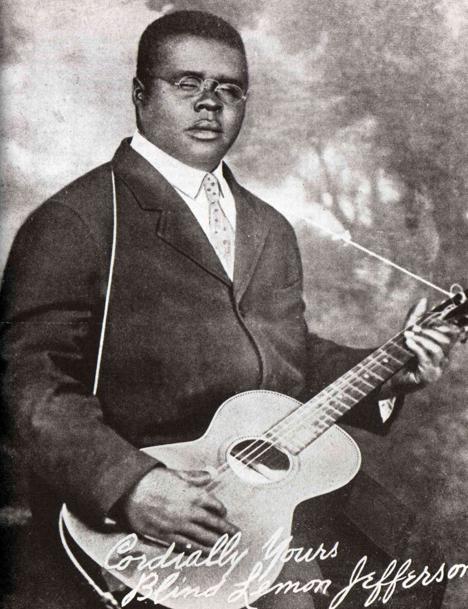

Blind Lemon Jefferson was an early Blues artist.
Early American blues music, often referred to as Delta blues, originated in the Mississippi Delta region in the early 20th century. It is a genre of music deeply rooted in African American culture and history, with influences from African musical traditions, work songs, and spirituals.
Some of the most influential early blues artists include legends like Robert Johnson, Bessie Smith, Muddy Waters, and Lead Belly. Their music laid the foundation for the development of blues as a genre and had a profound impact on the evolution of American music.
Early American blues is known for its emotionally charged lyrics and soulful guitar playing. Some iconic blues songs from this era include "Cross Road Blues" by Robert Johnson, "St. Louis Blues" by Bessie Smith, and "Hoochie Coochie Man" by Muddy Waters.
The legacy of early American blues music is still felt today, as it paved the way for the development of various music genres, including rock 'n' roll and jazz. It continues to inspire musicians and connect people through its raw and authentic expression of life's joys and struggles.